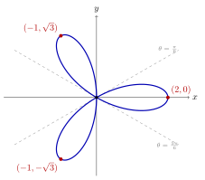
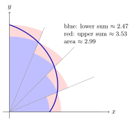
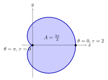
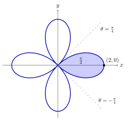
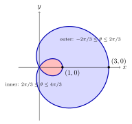
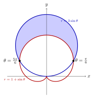
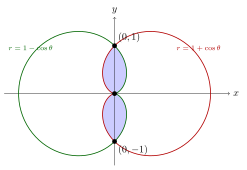
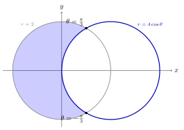
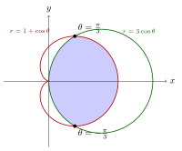

12.3 Calculus in Polar Coordinates¶
Guiding question
The area of a disc of radius \(\rho\) is \(\pi\rho^2\), so a sector of angle \(\varphi\) has area \(\frac12\rho^2\varphi\). A region bounded by a polar curve is, to a good approximation, a fan of thin sectors, one for each direction, with the radius of each sector given by the curve. Adding the sectors gives an integral, and the same idea of “a polar curve is a parametric curve” gives its tangent lines and its length. Polar coordinates make areas of cardioids, petals and spirals easy, and they make one thing hard: a region is described by a direction and a distance, so the limits of integration must follow the directions in which the region exists, not the point where a curve “looks” like it starts. This section proves the formulas for tangent lines at the pole, for the area of a region, for the area between two curves and for arc length, and it spends as much time on choosing the limits correctly (where two curves meet, where a curve is traced twice, where the radial coordinate is negative) as on computing the integrals.
By the end of this section you should be able to:
-
find the tangent lines to a polar curve at the pole, and the slope at any other point (Section 12.2);
-
set up and evaluate the area of a region bounded by one polar curve and two rays, including one petal or one loop of a curve whose radial coordinate changes sign;
-
find the area inside one curve and outside another, or inside both, by finding the limits from the intersection points (including the origin) and deciding which curve is farther from the pole in each direction;
-
recognize when an integral over too long an interval counts a region twice;
-
set up and evaluate the length of a polar curve traced once;
-
prove each of these formulas.
Tangent lines at the pole¶
By Theorem 12.2.29 the slope of \(r=f(\theta)\) is \(\frac{f'\sin\theta+f\cos\theta}{f'\cos\theta-f\sin\theta}\). At a point where \(f(\theta_0)=0\) the curve is at the origin, and the formula simplifies.
Theorem 12.3.1: Tangent line at the pole
Let \(f\) be differentiable with \(f(\theta_0)=0\) and \(f'(\theta_0)\ne0\). Then the curve \(r=f(\theta)\) passes through the pole at \(\theta=\theta_0\), and the tangent line there is the line through the pole at the angle \(\theta_0\): the line \(y=(\tan\theta_0)\,x\) if \(\cos\theta_0\ne0\), and the \(y\)-axis if \(\cos\theta_0=0\).
Proof. By Theorem 12.2.13, at \(\theta=\theta_0\) the velocity vector is \(\bigl(x',y'\bigr)=\bigl(f'\cos\theta_0-0,\ f'\sin\theta_0+0\bigr)=f'(\theta_0)\,(\cos\theta_0,\sin\theta_0)\), which is not the zero vector. A curve whose velocity at a point is a nonzero vector has that vector as a direction of its tangent line (Theorem 12.1.12), and here the vector points along the ray at angle \(\theta_0\) (or its opposite, if \(f'(\theta_0)<0\)). So the tangent line is the line through the origin with direction \((\cos\theta_0,\sin\theta_0)\). If \(\cos\theta_0\ne0\) its slope is \(\frac{\sin\theta_0}{\cos\theta_0}=\tan\theta_0\); if \(\cos\theta_0=0\) the direction is vertical. ◻ ∎
Example 12.3.2: Tangent lines of a three-petal rose at the pole
Find the tangent lines at the pole of \(r=2\cos3\theta\) and mark the tips of the petals.
Solution. \(f(\theta)=2\cos3\theta\) is \(0\) when \(3\theta=\frac\pi2+\pi k\), that is \(\theta=\frac\pi6+\frac{\pi k}3\). The curve is traced once for \(0\le\theta<\pi\) (Theorem 12.2.23: three petals, odd), so we need the values \(\theta=\frac\pi6,\frac\pi2,\frac{5\pi}6\). There \(f'(\theta)=-6\sin3\theta\) equals \(-6\sin\frac\pi2=-6\), \(-6\sin\frac{3\pi}2=6\), \(-6\sin\frac{5\pi}2=-6\): never \(0\), so Theorem 12.3.1 applies. The tangent lines at the pole are the lines at the angles \(\frac\pi6,\frac\pi2,\frac{5\pi}6\): \(y=\frac{x}{\sqrt3}\), the \(y\)-axis (since \(\cos\frac\pi2=0\)), and \(y=-\frac x{\sqrt3}\). The petals are centered where \(\abs f\) is largest, at \(\theta=0,\frac\pi3,\frac{2\pi}3\): the tips are \(P(2,0)=(2,0)\), \(P\left(-2,\frac\pi3\right)=\left(-1,-\sqrt3\right)\) and \(P\left(2,\frac{2\pi}3\right)=\left(-1,\sqrt3\right)\), the last two because \(\cos\pi=-1\) and \(\cos2\pi=1\).

Area of a region bounded by a polar curve¶
For \(f\ge0\) and \(\alpha<\beta\) with \(\beta-\alpha\le2\pi\), let \(R(f;\alpha,\beta)\) be the region swept out by the segments from the pole to the curve:
If \(\beta-\alpha=2\pi\) we also assume \(f(\beta)=f(\alpha)\), so that the curve closes up. The area is the area of Calculus I, with the properties (A1)–(A4) stated in Appendix J. Appendix J also proves that a sector of radius \(\rho\) and angle \(\varphi\) has area \(\frac12\rho^2\varphi\) (Theorem J.1) and that a polar curve itself has area zero (Theorem J.2).
Theorem 12.3.3: Area in polar coordinates
Let \(f\) be continuous and \(f\ge0\) on \([\alpha,\beta]\), \(0<\beta-\alpha\le2\pi\). Then \(R(f)\) has area
If instead \(f\le0\) on \([\alpha,\beta]\), the points \(P(s,\theta)\) with \(f(\theta)\le s\le0\) fill the reflection of \(R(-f)\) through the pole and have the same area \(\frac12\int_\alpha^\beta f^2\,d\theta\).
Proof. Let \(\Pi:\ \alpha=\theta_0<\theta_1<\cdots<\theta_n=\beta\) be a partition, \(\Delta\theta_k=\theta_k-\theta_{k-1}\), and let \(m_k\) and \(M_k\) be the least and the greatest value of \(f\) on \([\theta_{k-1},\theta_k]\) (they exist because \(f\) is continuous). The part \(R_k\) of \(R(f)\) over \([\theta_{k-1},\theta_k]\) contains the sector of radius \(m_k\) and angle \(\Delta\theta_k\), and is contained in the sector of radius \(M_k\) and the same angle. Neighboring sectors share only a segment of a ray (and, if \(\beta-\alpha=2\pi\), the first and last share the ray at \(\alpha\)), and a segment has area zero (Appendix J, (A2)). Hence, by (A1), (A2) and Theorem J.1,
Because \(f\ge0\), \(m_k^2\) and \(M_k^2\) are the least and greatest values of \(f^2\) on the subinterval, so the two sums are the lower sum \(L(\Pi)\) and the upper sum \(U(\Pi)\) of the continuous function \(\frac12f^2\). As the mesh of \(\Pi\) tends to \(0\), both tend to \(\frac12\int_\alpha^\beta f^2\,d\theta\) (Calculus I). The area is squeezed between them, so it equals that number. For \(f\le0\), the point \(P(s,\theta)\) with \(f(\theta)\le s\le0\) is \(P(-s,\theta+\pi)\) with \(0\le-s\le-f(\theta)\), the reflection through the pole of the point \(P(-s,\theta)\) of \(R(-f)\); reflections preserve area (A3) and \((-f)^2=f^2\). ◻ ∎

The picture shows the proof for the curve \(r=1.2+0.9\theta\) (\(0\le\theta\le\frac\pi2\)) with \(n=4\): the blue sectors have radius \(m_k\) (inside the region) and the red ones radius \(M_k\) (covering it). The region lies between them, and the two total areas converge to the area as \(n\to\infty\).
Pause and think 12.3.1: Why \(\frac12f^2\)?
The area formula has \(f^2\) and a factor \(\frac12\), whereas the arc length formula and Calculus I areas have no square. Explain, using a sector of small angle \(d\theta\) and radius \(f\), why the integrand must have the dimension of length squared.
Answer and discussion
A sector of radius \(f\) and small angle \(d\theta\) is almost a triangle with base the arc \(f\,d\theta\) and height \(f\), whose area is \(\frac12\cdot f\,d\theta\cdot f=\frac12f^2\,d\theta\). The angle \(d\theta\) is a pure number (radians), so \(f^2\,d\theta\) has the dimension of length squared, as an area must. The arc length integrand \(\sqrt{f^2+f'^2}\) is a length times \(d\theta\) (a length), and a Calculus I area \(\int f\,dx\) has two lengths, \(f\) and \(dx\). Exactly: the chord triangle of angle \(\varphi\) has area \(\frac12\rho^2\sin\varphi\), which is \(\frac12\rho^2\varphi\) to first order.
Limits of integration: three ways to go wrong
(1) The curve is traced more than once. The integral over an interval longer than the one that traces the curve once counts the region more than once (Example 12.3.7). Use Theorem 12.2.23 for the interval. (2) The radial coordinate changes sign. Theorem 12.3.3 applies on each interval where \(f\) has one sign; split at the zeros of \(f\) (Example 12.3.6). (3) Two regions. “Inside” means “between the pole and the curve in each direction”; the limits must be the directions in which the region lies (Examples 12.3.10–12.3.14).
Example 12.3.4: Area inside a cardioid
Find the area enclosed by \(r=1+\cos\theta\).
Solution. \(f=1+\cos\theta\ge0\), and the cardioid is traced once for \(0\le\theta\le2\pi\) (Theorem 12.2.23), so Theorem 12.3.3 gives \(A=\frac12\int_0^{2\pi}(1+\cos\theta)^2d\theta\). Expand: \((1+\cos\theta)^2=1+2\cos\theta+\cos^2\theta\), and \(\cos^2\theta=\frac{1+\cos2\theta}2\) (a power-reducing identity), so \((1+\cos\theta)^2=\frac32+2\cos\theta+\frac12\cos2\theta\). An antiderivative is \(\frac32\theta+2\sin\theta+\frac14\sin2\theta\); at \(2\pi\) it is \(3\pi+0+0\) and at \(0\) it is \(0\), so the integral is \(3\pi\) and \(A=\frac12\cdot3\pi=\frac{3\pi}2\approx4.71\). Check. The cardioid lies between the circle of radius \(1\) (area \(\pi\approx3.14\)) and the circle of radius \(2\) (area \(4\pi\approx12.6\)), and \(4.71\) does.

Knowledge Check 12.3.1: Setting up an area
Write, but do not evaluate, the integral for the area enclosed by \(r=2-2\cos\theta\), and give the interval of \(\theta\) you used and why.
Example 12.3.5: One petal and the whole rose
Find the area of one petal of \(r=2\cos2\theta\) and the area enclosed by the whole rose.
Solution. \(f\ge0\) exactly when \(\cos2\theta\ge0\), that is \(-\frac\pi2\le2\theta\le\frac\pi2\) (mod \(2\pi\)), so the petal along the positive \(x\)-axis is traced for \(-\frac\pi4\le\theta\le\frac\pi4\), and \(f=0\) at both ends (the petal starts and ends at the pole). By Theorem 12.3.3, \(A_{\text{petal}}=\frac12\int_{-\pi/4}^{\pi/4}4\cos^22\theta\,d\theta=\int_{-\pi/4}^{\pi/4}(1+\cos4\theta)\,d\theta\), using \(2\cos^22\theta=1+\cos4\theta\) (so \(\frac12\cdot4\cos^22\theta=2\cos^22\theta\)). An antiderivative is \(\theta+\frac14\sin4\theta\); at \(\frac\pi4\) it is \(\frac\pi4+\frac14\sin\pi=\frac\pi4\) and at \(-\frac\pi4\) it is \(-\frac\pi4\), so \(A_{\text{petal}}=\frac\pi2\). The rose has four petals (Theorem 12.2.17), congruent by rotation (A3), so the area enclosed is \(4\cdot\frac\pi2=2\pi\). Check with one integral over the interval that traces the whole rose once, \(0\le\theta\le2\pi\) (Theorem 12.2.23): \(\frac12\int_0^{2\pi}4\cos^22\theta\,d\theta=\int_0^{2\pi}(1+\cos4\theta)\,d\theta=2\pi\). (On this interval \(f\) is negative on two of the petals; by the second statement of Theorem 12.3.3 each of them still contributes \(\frac12\int f^2\).)

Knowledge Check 12.3.2: One petal
Give the limits of \(\theta\) for one petal of \(r=\sin3\theta\) and the area of that petal.
Example 12.3.6: A limaçon with an inner loop
For \(r=1+2\cos\theta\) find the area of the inner loop, the area enclosed by the outer loop (which contains the inner one), and the area between the loops.
Solution. \(f=1+2\cos\theta\) is \(0\) when \(\cos\theta=-\frac12\), that is \(\theta=\frac{2\pi}3,\frac{4\pi}3\). For \(-\frac{2\pi}3<\theta<\frac{2\pi}3\) we have \(f>0\) (the outer loop), and for \(\frac{2\pi}3<\theta<\frac{4\pi}3\) we have \(f<0\) (the inner loop, drawn on the far side of the pole). First, \(\frac12f^2=\frac12\left(1+4\cos\theta+4\cos^2\theta\right)=\frac32+2\cos\theta+\cos2\theta\), using \(4\cos^2\theta=2+2\cos2\theta\). An antiderivative is \(F(\theta)=\frac32\theta+2\sin\theta+\frac12\sin2\theta\). Inner loop (\(f\le0\), second statement of Theorem 12.3.3): \(F\left(\frac{4\pi}3\right)-F\left(\frac{2\pi}3\right)=\left[2\pi-\sqrt3+\frac12\cdot\frac{\sqrt3}2\right]-\left[\pi+\sqrt3-\frac12\cdot\frac{\sqrt3}2\right]=\pi-\frac{3\sqrt3}2\approx0.54\) (we used \(\sin\frac{4\pi}3=-\frac{\sqrt3}2\), \(\sin\frac{8\pi}3=\frac{\sqrt3}2\), \(\sin\frac{2\pi}3=\frac{\sqrt3}2\), \(\sin\frac{4\pi}3=-\frac{\sqrt3}2\)). Outer loop (\(f\ge0\)): \(F\left(\frac{2\pi}3\right)-F\left(-\frac{2\pi}3\right)=\left[\pi+\sqrt3+\frac12\sin\frac{4\pi}3\right]-\left[-\pi-\sqrt3-\frac12\sin\frac{4\pi}3\right]\), and \(\sin\frac{4\pi}3=-\frac{\sqrt3}2\), so this is \(2\pi+2\sqrt3-\frac{\sqrt3}2=2\pi+\frac{3\sqrt3}2\approx8.88\). The region swept by the outer loop contains the inner loop. Between the loops: \(\left(2\pi+\frac{3\sqrt3}2\right)-\left(\pi-\frac{3\sqrt3}2\right)=\pi+3\sqrt3\approx8.34\). Check. The integral over the whole interval \([0,2\pi]\) is \(\frac12\int f^2=3\pi\): it is the outer-loop area plus the inner-loop area, \(2\pi+\frac{3\sqrt3}2+\pi-\frac{3\sqrt3}2=3\pi\), so it counts the inner loop twice (once as part of the outer region and once on its own) and is not the area between the loops.

Example 12.3.7: A limit that double-counts
(a) Find the area of the disc bounded by \(r=2\sin\theta\). (b) Find the area enclosed by one loop of the lemniscate \(r^2=4\cos2\theta\).
Solution. (a) The circle \(r=2\sin\theta\) has radius \(1\) and center \((0,1)\) (Theorem 12.2.11), so the area must be \(\pi\). Since \(f\ge0\) exactly for \(0\le\theta\le\pi\), the circle is traced once on \([0,\pi]\) (for \(\pi<\theta<2\pi\) the radial coordinate is negative and the same points are traced again, Theorem 12.2.23), and \(A=\frac12\int_0^\pi4\sin^2\theta\,d\theta=\int_0^\pi(1-\cos2\theta)\,d\theta=\left[\theta-\frac12\sin2\theta\right]_0^\pi=\pi\) (\(2\sin^2\theta=1-\cos2\theta\)). The “obvious” interval \(0\le\theta\le2\pi\) gives \(\frac12\int_0^{2\pi}4\sin^2\theta\,d\theta=2\pi\), twice the area: the disc was counted twice. (b) \(r^2=4\cos2\theta\) requires \(\cos2\theta\ge0\), so \(-\frac\pi4\le\theta\le\frac\pi4\) for the loop through \((2,0)\) (the other loop is the reflection of this one through the pole), with \(r=f(\theta)=2\sqrt{\cos2\theta}\). Then \(\frac12f^2=2\cos2\theta\) and \(A=\int_{-\pi/4}^{\pi/4}2\cos2\theta\,d\theta=\left[\sin2\theta\right]_{-\pi/4}^{\pi/4}=1-(-1)=2\). (The integral of \(\frac12r^2\) never needs the square root.) The area enclosed by the whole lemniscate is \(4\).
Pause and think 12.3.2: When is it counted twice?
For which values of \(a\) and \(b\) does \(\frac12\int_a^br^2\,d\theta\) give twice the area of the region enclosed by \(r=\cos\theta\)? Is it ever more than twice?
Answer and discussion
The circle \(r=\cos\theta\) has radius \(\frac12\), so area \(\frac\pi4\), and it is traced once on any interval of length \(\pi\). On \([0,2\pi]\), or any interval of length \(2\pi\), the integral gives \(\frac12\int\cos^2\theta\,d\theta=\frac\pi2\), twice the area. It is more than twice on longer intervals: on an interval of length \(3\pi\) it is three times the area, and in general \(k\) times for length \(k\pi\). For lengths that are not multiples of \(\pi\) the integral is the area of the part of the disc that is swept, counted with multiplicity.
Area between two polar curves¶
Theorem 12.3.8: Area between two polar curves
Let \(f\) and \(g\) be continuous on \([\alpha,\beta]\) with \(0\le g\le f\) and \(0<\beta-\alpha\le2\pi\) (if \(\beta-\alpha=2\pi\), assume that \(f\) and \(g\) take equal values at \(\alpha\) and \(\beta\)). The region between the two curves, \(R(f,g)=\{P(s,\theta):\ g(\theta)\le s\le f(\theta),\ \alpha\le\theta\le\beta\}\), has area
Moreover the region inside both curves, \(\{P(s,\theta):0\le s\le\min(f,g)\}\) (for \(f,g\ge0\)), has area \(\frac12\int_\alpha^\beta\min(f,g)^2\,d\theta\).
Proof. A point \(P(s,\theta)\) with \(s>0\) and \(\theta\) in the half-open interval \([\alpha,\alpha+2\pi)\) has only that one representation there (Theorem 12.2.3). The set \(R(f)\) is the union of \(R(g)\) (\(s\le g\)) and \(R(f,g)\) (\(g\le s\)). A point in both has \(s=g(\theta)\), so it lies on the curve \(C_g=\{P(g(\theta),\theta)\}\), which has area zero (Theorem J.2). By (A2), \(\operatorname{area}R(f)=\operatorname{area}R(g)+\operatorname{area}R(f,g)\), and by Theorem 12.3.3 applied to \(f\) and to \(g\),
For the second statement, \(P(s,\theta)\) lies in both \(R(f)\) and \(R(g)\) if and only if \(s\le f(\theta)\) and \(s\le g(\theta)\), that is \(s\le\min(f(\theta),g(\theta))\). This is the region \(R(\min(f,g))\), and \(\min(f,g)\) is continuous and \(\ge0\), so Theorem 12.3.3 gives its area. ◻ ∎
Procedure 12.3.9: Area inside or outside two curves
-
Draw both curves. For each direction \(\theta\), decide which curve is farther from the pole, and over which directions the region exists. (Use the interval of \(\theta\) that traces each curve once, Theorem 12.2.23.)
-
Find the directions where the curves meet: solve (A) and (B) of Theorem 12.2.25 and check the pole. The regions change at those directions.
-
On each interval of directions, integrate \(\frac12(\text{outer}^2-\text{inner}^2)\) (“outside one, inside the other”) or \(\frac12\min^2\) (“inside both”).
-
Check the answer against a quick estimate or against symmetry.
Example 12.3.10: Inside one circle, outside a cardioid
Find the area inside \(r=3\sin\theta\) and outside \(r=1+\sin\theta\).
Solution. Intersections. (A): \(3\sin\theta=1+\sin\theta\) gives \(\sin\theta=\frac12\), so \(\theta=\frac\pi6,\frac{5\pi}6\), with \(r=\frac32\): the points \(\left(\frac{3\sqrt3}4,\frac34\right)\) and \(\left(-\frac{3\sqrt3}4,\frac34\right)\). (B): \(3\sin\theta=-(1+\sin(\theta+\pi))=-1+\sin\theta\) gives \(\sin\theta=-\frac12\), \(\theta=\frac{7\pi}6,\frac{11\pi}6\), and the points \(P\left(-\frac32,\theta\right)\) are the same two points. Pole. The circle passes through it (\(\theta=0\)) and so does the cardioid (\(\theta=\frac{3\pi}2\)); it is an endpoint of the region, not an interior intersection. Which curve is outside. The circle is traced once for \(0\le\theta\le\pi\), and \(3\sin\theta>1+\sin\theta\) exactly when \(\sin\theta>\frac12\), that is for \(\frac\pi6<\theta<\frac{5\pi}6\); elsewhere in \([0,\pi]\) the circle is inside the cardioid, so there is no region. By Theorem 12.3.8,
because \(9\sin^2\theta-(1+\sin\theta)^2=8\sin^2\theta-2\sin\theta-1\) and \(8\sin^2\theta=4-4\cos2\theta\) give \(3-4\cos2\theta-2\sin\theta\), which we halve. An antiderivative is \(\frac32\theta-\sin2\theta+\cos\theta\): at \(\frac{5\pi}6\) it is \(\frac{5\pi}4+\frac{\sqrt3}2-\frac{\sqrt3}2=\frac{5\pi}4\) and at \(\frac\pi6\) it is \(\frac\pi4-\frac{\sqrt3}2+\frac{\sqrt3}2=\frac\pi4\), so \(A=\pi\).

Pause and think 12.3.3: A signed difference
In Example 12.3.10 the integrand \(\frac12\left(9\sin^2\theta-(1+\sin\theta)^2\right)\) was integrated only over \(\left[\frac\pi6,\frac{5\pi}6\right]\). What would \(\frac12\int_0^\pi\left(9\sin^2\theta-(1+\sin\theta)^2\right)d\theta\) measure, and why is it not an area?
Answer and discussion
On \([0,\pi]\) the circle \(r=3\sin\theta\) is traced once and the cardioid \(r=1+\sin\theta\) sweeps its upper half, so the integral is \(\operatorname{area}(\text{disc})-\operatorname{area}(\text{upper half of the cardioid})=\frac{9\pi}4-\left(\frac{3\pi}4+2\right)=\frac{3\pi}2-2\approx2.71\). It is not the area of the region inside the circle and outside the cardioid (\(\pi\approx3.14\)) because for \(0\le\theta<\frac\pi6\) and \(\frac{5\pi}6<\theta\le\pi\) the cardioid is outside the circle, the integrand is negative, and those pieces are subtracted instead of being left out.
Example 12.3.11: Inside both of two circles
Find the area inside both \(r=2\cos\theta\) and \(r=2\sin\theta\).
Solution. Both circles have radius \(1\) (centers \((1,0)\) and \((0,1)\)). (A): \(2\cos\theta=2\sin\theta\) gives \(\theta=\frac\pi4\) (in \([0,\pi]\), where \(2\sin\theta\) traces its circle once; the other circle is traced for \(-\frac\pi2\le\theta\le\frac\pi2\), so only \(0\le\theta\le\frac\pi2\) matters). The point is \(\left(\sqrt2\cos\frac\pi4,\sqrt2\sin\frac\pi4\right)=(1,1)\). Both circles pass through the pole. For \(0\le\theta\le\frac\pi4\) the smaller radial coordinate is \(2\sin\theta\), and for \(\frac\pi4\le\theta\le\frac\pi2\) it is \(2\cos\theta\). By Theorem 12.3.8,
the two integrals being equal (substitute \(\theta\mapsto\frac\pi2-\theta\)). Now \(2\sin^2\theta=1-\cos2\theta\), and \(\int_0^{\pi/4}(1-\cos2\theta)\,d\theta=\left[\theta-\frac12\sin2\theta\right]_0^{\pi/4}=\frac\pi4-\frac12\). So \(A=2\left(\frac\pi4-\frac12\right)=\frac\pi2-1\approx0.57\). Check by geometry: two unit circles whose centers are \(\sqrt2\) apart overlap in a lens of area \(2\arccos\frac{\sqrt2}2-\frac{\sqrt2}2\sqrt{4-2}=\frac\pi2-1\).
Example 12.3.12: Inside both of two cardioids: the hidden intersection matters
Find the area inside both \(r=1+\cos\theta\) and \(r=1-\cos\theta\).
Solution. In Example 12.2.27 we found that the curves meet at \((0,1)\) and \((0,-1)\) (equation (A), \(\theta=\frac\pi2,\frac{3\pi}2\)) and at the pole (reached at \(\theta=\pi\) by the first curve and at \(\theta=0\) by the second, so (A) and (B) do not see it). Each cardioid is traced once for \(0\le\theta\le2\pi\) and \(f,g\ge0\), so by Theorem 12.3.8 the area is \(\frac12\int_0^{2\pi}\min(f,g)^2\,d\theta\), with \(\min(1+\cos\theta,1-\cos\theta)=1-\abs{\cos\theta}\). The integrand \(\left(1-\abs{\cos\theta}\right)^2\) is symmetric about both axes (it is unchanged by \(\theta\mapsto-\theta\) and by \(\theta\mapsto\pi-\theta\)), so the integral over \([0,2\pi]\) is \(4\) times the integral over \(\left[0,\frac\pi2\right]\), where \(\abs{\cos\theta}=\cos\theta\):
because \((1-\cos\theta)^2=1-2\cos\theta+\cos^2\theta=\frac32-2\cos\theta+\frac12\cos2\theta\). The bracket is \(\frac{3\pi}4-2+0\), so \(A=\frac{3\pi}2-4\approx0.71\). Check. Each cardioid has area \(\frac{3\pi}2\approx4.71\) (Example 12.3.4), and the overlap is a small central region, \(0.71\). A solution that used only the intersection points \((0,\pm1)\) found by (A), and not the pole, would have no way of knowing that \(\min(f,g)\) is \(1-\cos\theta\) on the right and \(1+\cos\theta\) on the left.

Example 12.3.13: Inside a circle, outside another: a curve that is not there
Find the area inside \(r=2\) and outside \(r=4\cos\theta\).
Solution. The circle \(r=4\cos\theta\) has center \((2,0)\) and radius \(2\) and is traced once for \(-\frac\pi2\le\theta\le\frac\pi2\) (where \(4\cos\theta\ge0\)). Intersections. (A): \(4\cos\theta=2\), \(\theta=\pm\frac\pi3\), giving \((1,\pm\sqrt3)\). (B): \(4\cos\theta=-2\), \(\theta=\pm\frac{2\pi}3\), and the points \(P(-2,\pm\frac{2\pi}3)\) are the same two points. The disc \(r\le2\) and the circle meet only there (the pole is on the circle \(r=4\cos\theta\) but inside the disc). The directions. For \(\frac\pi3\le\theta\le\frac\pi2\) the region lies between \(r=4\cos\theta\) (inner) and \(r=2\) (outer); the same holds for \(-\frac\pi2\le\theta\le-\frac\pi3\). For \(\frac\pi2\le\theta\le\frac{3\pi}2\) no point of the circle \(r=4\cos\theta\) lies in these directions (the circle is in the half-plane \(x\ge0\)), so the whole half-disc belongs to the region. The area is the sum:
using \(16\cos^2\theta=8+8\cos2\theta\). The integral is \(\left[-4\theta-4\sin2\theta\right]_{\pi/3}^{\pi/2}=\left(-2\pi-0\right)-\left(-\frac{4\pi}3-2\sqrt3\right)=-\frac{2\pi}3+2\sqrt3\), so \(A=2\pi-\frac{2\pi}3+2\sqrt3=\frac{4\pi}3+2\sqrt3\approx7.65\). Check by geometry: the disc has area \(4\pi\) and the two discs overlap in a lens of area \(2\cdot4\arccos\frac12-1\cdot\sqrt{16-4}=\frac{8\pi}3-2\sqrt3\) (the circles have radius \(2\) and centers \(2\) apart); \(4\pi-\left(\frac{8\pi}3-2\sqrt3\right)=\frac{4\pi}3+2\sqrt3\). The tempting integral \(\frac12\int_{\pi/3}^{5\pi/3}\left(4-16\cos^2\theta\right)d\theta\) gives the negative number \(-\frac{8\pi}3+2\sqrt3\): it subtracts the circle in directions where there is no circle.

Example 12.3.14: Common part of a circle and a cardioid
Find the area inside both \(r=3\cos\theta\) and \(r=1+\cos\theta\).
Solution. Intersections. (A): \(3\cos\theta=1+\cos\theta\), \(\cos\theta=\frac12\), \(\theta=\pm\frac\pi3\), \(r=\frac32\): the points \(\left(\frac34,\pm\frac{3\sqrt3}4\right)\). (B): \(3\cos\theta=-(1-\cos\theta)\) gives \(\cos\theta=-\frac12\), and the points \(P\left(-\frac32,\frac{2\pi}3\right)\), \(P\left(-\frac32,\frac{4\pi}3\right)\) are the same two points. Pole. The circle passes through it at \(\theta=\pm\frac\pi2\), the cardioid at \(\theta=\pi\): it is a common point, but it is the boundary of the region. Which is inside. The circle is traced once for \(-\frac\pi2\le\theta\le\frac\pi2\), and in the other directions it has no points, so the region exists only for \(-\frac\pi2\le\theta\le\frac\pi2\). For \(0\le\theta\le\frac\pi3\) we have \(3\cos\theta\ge1+\cos\theta\): the cardioid is inside. For \(\frac\pi3\le\theta\le\frac\pi2\) the circle is inside. The region is symmetric about the \(x\)-axis, so
Since \((1+\cos\theta)^2=\frac32+2\cos\theta+\frac12\cos2\theta\), \(I_1=\left[\frac32\theta+2\sin\theta+\frac14\sin2\theta\right]_0^{\pi/3}=\frac\pi2+\sqrt3+\frac{\sqrt3}8=\frac\pi2+\frac{9\sqrt3}8\). Since \(9\cos^2\theta=\frac92+\frac92\cos2\theta\), \(I_2=\left[\frac92\theta+\frac94\sin2\theta\right]_{\pi/3}^{\pi/2}=\frac{9\pi}4-\left(\frac{3\pi}2+\frac{9\sqrt3}8\right)=\frac{3\pi}4-\frac{9\sqrt3}8\). Therefore \(A=I_1+I_2=\frac\pi2+\frac{3\pi}4=\frac{5\pi}4\approx3.93\): the irrational parts cancel. Check. The circle has area \(\frac{9\pi}4\approx7.07\), the cardioid \(\frac{3\pi}2\approx4.71\); the common part \(3.93\) is smaller than both.

Arc length in polar coordinates¶
Theorem 12.3.15: Arc length of a polar curve
Let \(f\) have a continuous derivative on \([\alpha,\beta]\). The speed of the curve \(r=f(\theta)\), \(\alpha\le\theta\le\beta\), is \(\sqrt{f(\theta)^2+f'(\theta)^2}\), and its length, counted once for each time a piece of the curve is traced, is
If the curve is traced once (distinct values of \(\theta\) in \([\alpha,\beta)\) give distinct points), \(L\) is the length of the curve as a set of points.
Proof. By Theorem 12.2.13 the curve is parametric with \(x'=f'\cos\theta-f\sin\theta\) and \(y'=f'\sin\theta+f\cos\theta\), both continuous. Expanding the squares,
since the cross terms cancel and \(\sin^2\theta+\cos^2\theta=1\). Theorem 12.1.19 gives \(L=\int_\alpha^\beta\sqrt{x'^2+y'^2}\,d\theta\), which is the stated formula. For a curve traced once, Remark (2) after that theorem and Theorem I.4 show that the length does not depend on the parametrization, so it is the length of the point set. ◻ ∎
Example 12.3.16: The length of a cardioid
Find the length of \(r=1+\cos\theta\).
Solution. \(f=1+\cos\theta\) and \(f'=-\sin\theta\), so \(f^2+f'^2=1+2\cos\theta+\cos^2\theta+\sin^2\theta=2+2\cos\theta=4\cos^2\frac\theta2\), by \(1+\cos\theta=2\cos^2\frac\theta2\) (half-angle identity). Hence the speed is \(2\abs{\cos\frac\theta2}\), which equals \(2\cos\frac\theta2\) for \(0\le\theta\le\pi\) (where \(\frac\theta2\in\left[0,\frac\pi2\right]\)) and \(-2\cos\frac\theta2\) for \(\pi\le\theta\le2\pi\). The cardioid is traced once on \([0,2\pi]\), and the two halves are mirror images, so \(L=2\int_0^\pi2\cos\frac\theta2\,d\theta=2\left[4\sin\frac\theta2\right]_0^\pi=8\). Check. The length lies between the circumferences of the circles of radius \(1\) and \(2\) (\(6.28\) and \(12.57\)). A common mistake: \(\int_0^{2\pi}2\cos\frac\theta2\,d\theta=0\), because the speed is \(2\abs{\cos(\theta/2)}\), not \(2\cos(\theta/2)\); a length cannot be \(0\).
Example 12.3.17: Two spirals
Find the length of (a) \(r=\theta\), \(0\le\theta\le2\pi\), and (b) \(r=e^\theta\), \(0\le\theta\le\pi\).
Solution. Both curves are traced once because \(r\) is strictly increasing, so distinct angles give distinct distances from the pole. (a) \(f=\theta\), \(f'=1\), so \(L=\int_0^{2\pi}\sqrt{\theta^2+1}\,d\theta\). Substitute \(\theta=\tan u\), \(d\theta=\sec^2u\,du\), \(\sqrt{\tan^2u+1}=\sec u\) (for \(u\in\left[0,\frac\pi2\right)\)): \(\int\sec^3u\,du=\frac12\left(\sec u\tan u+\ln\abs{\sec u+\tan u}\right)\) (integration by parts, from the table of trigonometric integrals). With \(\tan u=\theta\) and \(\sec u=\sqrt{1+\theta^2}\),
Check. Numerical integration of \(\sqrt{\theta^2+1}\) over \([0,2\pi]\) gives \(21.256\), and the length is more than the straight distance \(2\pi\approx6.28\) from the pole to \((2\pi,0)\), as it must be. (b) \(f=f'=e^\theta\), so \(f^2+f'^2=2e^{2\theta}\) and \(L=\int_0^\pi\sqrt2\,e^\theta\,d\theta=\sqrt2\left(e^\pi-1\right)\approx31.31\).
Knowledge Check 12.3.3: Setting up a length
Set up and evaluate the length of \(r=\theta^2\) for \(0\le\theta\le1\).
Looking ahead¶
The area formula \(\frac12\int f^2\,d\theta\) and the length formula \(\int\sqrt{f^2+f'^2}\,d\theta\) are the polar versions of the integrals of Calculus I. A surface of revolution made by revolving a polar curve about the \(x\)-axis or the \(y\)-axis has area given by the formula of Theorem 12.1.24 with the polar speed above and the radius of revolution \(y=f(\theta)\sin\theta\) or \(x=f(\theta)\cos\theta\); this is the natural next question for the cardioid and the spiral. In Section 12.4 the circle, ellipse, parabola and hyperbola are described by one polar equation \(r=\frac{ed}{1+e\cos\theta}\), and the area formula of this section will give the area swept by a planet moving in such an orbit (Kepler’s second law). In later chapters, area in polar coordinates becomes the area element \(r\,dr\,d\theta\) of a double integral in a plane, and \(dA=\frac12r^2\,d\theta\) appears again in the study of vector-valued functions.
Example bank¶
What’s in this bank. Twenty further worked examples, grouped by problem type and ordered from easiest to hardest within each group.
-
Area inside one curve (Examples 12.3.18–12.3.20): a circle with the wrong-looking interval; a scaled cardioid; a spiral.
-
Petals and loops (Examples 12.3.21–12.3.23): a four-petal rose; a dimpled limaçon; the inner loop of a limaçon.
-
Between two curves (Examples 12.3.24–12.3.26): a cardioid outside a circle; a circle outside a circle; two curves that never meet.
-
Limits from intersections (Examples 12.3.27–12.3.29): a disc and a circle; petals outside a circle; a lemniscate outside a circle.
-
Arc length (Examples 12.3.30–12.3.32): a circle; a spiral toward the pole; a small cardioid.
-
Tangent lines and partial areas (Examples 12.3.33–12.3.34): tangent lines at the pole; the part of a cardioid in the first quadrant.
Group 1: Area inside one curve¶
Example 12.3.18: A circle, and the right interval
Find the area enclosed by \(r=4\cos\theta\).
Solution. \(f=4\cos\theta\ge0\) for \(-\frac\pi2\le\theta\le\frac\pi2\), and the circle is traced once on this interval. Then \(A=\frac12\int_{-\pi/2}^{\pi/2}16\cos^2\theta\,d\theta=\int_{-\pi/2}^{\pi/2}\left(4+4\cos2\theta\right)d\theta\), using \(8\cos^2\theta=4+4\cos2\theta\). The antiderivative \(4\theta+2\sin2\theta\) equals \(2\pi+0\) at \(\frac\pi2\) and \(-2\pi\) at \(-\frac\pi2\), so \(A=4\pi\). Check. The circle has center \((2,0)\) and radius \(2\) (Theorem 12.2.11), area \(\pi\cdot2^2=4\pi\).
Example 12.3.19: A scaled cardioid
Find the area enclosed by \(r=2-2\cos\theta\).
Solution. \(f=2-2\cos\theta\ge0\), traced once on \([0,2\pi]\). \(A=\frac12\int_0^{2\pi}4(1-\cos\theta)^2d\theta=2\int_0^{2\pi}\left(\frac32-2\cos\theta+\frac12\cos2\theta\right)d\theta\), since \((1-\cos\theta)^2=1-2\cos\theta+\cos^2\theta\) and \(\cos^2\theta=\frac{1+\cos2\theta}2\). The antiderivative \(\frac32\theta-2\sin\theta+\frac14\sin2\theta\) is \(3\pi\) at \(2\pi\) and \(0\) at \(0\), so \(A=2\cdot3\pi=6\pi\approx18.85\). Check. Doubling every radial coordinate multiplies areas by \(4\), and the cardioid \(r=1+\cos\theta\) has area \(\frac{3\pi}2\) (Example 12.3.4); the reflection \(\theta\mapsto\theta+\pi\) does not change areas: \(4\cdot\frac{3\pi}2=6\pi\).
Example 12.3.20: The region under a spiral
Find the area of the region bounded by the spiral \(r=\theta\), \(0\le\theta\le\pi\), and the polar axis.
Solution. The region is swept by the segments from the pole to the spiral, for \(0\le\theta\le\pi\); it is bounded by the spiral and the segment from the pole to \((\pi,0)\) on the polar axis. Here \(f=\theta\ge0\) and \(\pi-0\le2\pi\), so Theorem 12.3.3 applies: \(A=\frac12\int_0^\pi\theta^2\,d\theta=\frac12\cdot\frac{\pi^3}3=\frac{\pi^3}6\approx5.17\). Check. The region lies in the upper half-plane inside the half-disc of radius \(\pi\), of area \(\frac{\pi\cdot\pi^2}2\approx15.5\), and \(5.17\) is one third of that: the integral of \(\theta^2\) is one third of the integral of \(\pi^2\).
Group 2: Petals and loops¶
Example 12.3.21: A four-petal rose
Find the area of one petal and of the whole rose \(r=3\sin2\theta\).
Solution. \(f\ge0\) for \(0\le\theta\le\frac\pi2\) (where \(\sin2\theta\ge0\)), \(f=0\) at both ends: that is one petal, in the first quadrant. Then \(A_{\text{petal}}=\frac12\int_0^{\pi/2}9\sin^22\theta\,d\theta=\frac94\int_0^{\pi/2}(1-\cos4\theta)\,d\theta=\frac94\left[\theta-\frac14\sin4\theta\right]_0^{\pi/2}=\frac94\cdot\frac\pi2=\frac{9\pi}8\), using \(\sin^22\theta=\frac{1-\cos4\theta}2\). There are four congruent petals (Theorem 12.2.17: \(2\cdot2=4\)), so the whole rose has area \(4\cdot\frac{9\pi}8=\frac{9\pi}2\approx14.14\). Check. \(\frac12\int_0^{2\pi}9\sin^22\theta\,d\theta=\frac94\cdot2\pi=\frac{9\pi}2\), and the interval \([0,2\pi]\) traces the rose once.
Example 12.3.22: A limaçon without an inner loop
Find the area enclosed by \(r=2+\cos\theta\).
Solution. \(f=2+\cos\theta\ge1>0\), traced once on \([0,2\pi]\). \(A=\frac12\int_0^{2\pi}\left(4+4\cos\theta+\cos^2\theta\right)d\theta=\frac12\int_0^{2\pi}\left(\frac92+4\cos\theta+\frac12\cos2\theta\right)d\theta\) (by \(\cos^2\theta=\frac{1+\cos2\theta}2\)). The antiderivative \(\frac92\theta+4\sin\theta+\frac14\sin2\theta\) is \(9\pi\) at \(2\pi\) and \(0\) at \(0\). So \(A=\frac{9\pi}2\approx14.14\). Check. The curve lies between the circles of radii \(1\) and \(3\), of areas \(\pi\) and \(9\pi\), and its area is the average of the squares of \(2+\cos\theta\) over a turn: \(\frac12\cdot2\pi\cdot\left(4+\frac12\right)\).
Example 12.3.23: The inner loop of a limaçon
Find the area of the inner loop of \(r=2+4\cos\theta\).
Solution. \(f=0\) when \(\cos\theta=-\frac12\), \(\theta=\frac{2\pi}3,\frac{4\pi}3\), and \(f<0\) between them: this is the inner loop. \(\frac12f^2=\frac12\left(4+16\cos\theta+16\cos^2\theta\right)=6+8\cos\theta+4\cos2\theta\) (using \(8\cos^2\theta=4+4\cos2\theta\)), with antiderivative \(F=6\theta+8\sin\theta+2\sin2\theta\). \(F\left(\frac{4\pi}3\right)=8\pi-4\sqrt3+\sqrt3=8\pi-3\sqrt3\) (as \(\sin\frac{4\pi}3=-\frac{\sqrt3}2\), \(\sin\frac{8\pi}3=\frac{\sqrt3}2\)) and \(F\left(\frac{2\pi}3\right)=4\pi+4\sqrt3-\sqrt3=4\pi+3\sqrt3\) (\(\sin\frac{2\pi}3=\frac{\sqrt3}2\), \(\sin\frac{4\pi}3=-\frac{\sqrt3}2\)). So \(A=F\left(\frac{4\pi}3\right)-F\left(\frac{2\pi}3\right)=4\pi-6\sqrt3\approx2.17\). Check. It is \(4\) times the inner loop of \(r=1+2\cos\theta\), which is \(\pi-\frac{3\sqrt3}2\) (Example 12.3.6), because every radial coordinate is doubled.
Group 3: Between two curves¶
Example 12.3.24: Inside a cardioid, outside a circle
Find the area inside \(r=2+2\cos\theta\) and outside \(r=2\).
Solution. (A): \(2+2\cos\theta=2\) gives \(\theta=\pm\frac\pi2\). (B): \(2+2\cos\theta=-2\) has no solution (\(\cos\theta=-2\)). The pole is on the cardioid (\(\theta=\pi\)) but not on the circle, so it is not an intersection. The cardioid is outside the circle exactly when \(2+2\cos\theta>2\), i.e. for \(-\frac\pi2<\theta<\frac\pi2\). Then \(A=\frac12\int_{-\pi/2}^{\pi/2}\left[(2+2\cos\theta)^2-4\right]d\theta=\int_{-\pi/2}^{\pi/2}\left(4\cos\theta+2\cos^2\theta\right)d\theta\), because \((2+2\cos\theta)^2-4=8\cos\theta+4\cos^2\theta\). With \(2\cos^2\theta=1+\cos2\theta\), the integrand is \(4\cos\theta+1+\cos2\theta\), with antiderivative \(4\sin\theta+\theta+\frac12\sin2\theta\). At \(\frac\pi2\) it is \(4+\frac\pi2\) and at \(-\frac\pi2\) it is \(-4-\frac\pi2\), so \(A=8+\pi\approx11.14\).
Example 12.3.25: Inside a circle, outside a smaller circle
Find the area inside \(r=6\cos\theta\) and outside \(r=3\).
Solution. The large circle (\(r=6\cos\theta\), center \((3,0)\), radius \(3\)) is traced once for \(-\frac\pi2\le\theta\le\frac\pi2\) and has no points in the other directions. (A): \(6\cos\theta=3\), \(\theta=\pm\frac\pi3\); (B): \(6\cos\theta=-3\) gives the same points. The large circle is outside \(r=3\) for \(|\theta|<\frac\pi3\) and inside it for \(\frac\pi3<|\theta|\le\frac\pi2\). Hence \(A=2\cdot\frac12\int_0^{\pi/3}\left(36\cos^2\theta-9\right)d\theta=\int_0^{\pi/3}\left(9+18\cos2\theta\right)d\theta\) (as \(36\cos^2\theta=18+18\cos2\theta\)) \(=\left[9\theta+9\sin2\theta\right]_0^{\pi/3}=3\pi+\frac{9\sqrt3}2\approx17.22\).
Example 12.3.26: No intersection: the limits are the whole turn
Find the area inside \(r=3\) and outside \(r=1+\cos\theta\).
Solution. The cardioid has \(0\le1+\cos\theta\le2<3\), so it lies strictly inside the circle: (A) has no solution, and (B) \(1+\cos\theta=-3\) does not either. The region is the whole disc minus the cardioid’s interior, for every direction, so the limits are \(0\) and \(2\pi\): \(A=\frac12\int_0^{2\pi}\left(9-(1+\cos\theta)^2\right)d\theta=\frac12\cdot18\pi-\frac12\cdot3\pi=9\pi-\frac{3\pi}2=\frac{15\pi}2\), using \(\frac12\int_0^{2\pi}(1+\cos\theta)^2d\theta=\frac{3\pi}2\) (Example 12.3.4). Check. \(\pi\cdot3^2-\frac{3\pi}2\).
Group 4: Limits from intersections¶
Example 12.3.27: Inside a disc and a circle
Find the area inside both \(r=2\) and \(r=4\sin\theta\).
Solution. The circle \(r=4\sin\theta\) (center \((0,2)\), radius \(2\)) is traced once on \([0,\pi]\). (A): \(4\sin\theta=2\), \(\theta=\frac\pi6,\frac{5\pi}6\); (B) gives the same points. For \(0\le\theta\le\frac\pi6\) the smaller radial coordinate is \(4\sin\theta\); for \(\frac\pi6\le\theta\le\frac{5\pi}6\) it is \(2\); for \(\frac{5\pi}6\le\theta\le\pi\) it is \(4\sin\theta\) again. By Theorem 12.3.8, \(A=2\cdot\frac12\int_0^{\pi/6}16\sin^2\theta\,d\theta+\frac12\int_{\pi/6}^{5\pi/6}4\,d\theta\) (the two outer pieces are equal by the symmetry \(\theta\mapsto\pi-\theta\)). First, \(16\sin^2\theta=8-8\cos2\theta\), so \(\int_0^{\pi/6}16\sin^2\theta\,d\theta=\left[8\theta-4\sin2\theta\right]_0^{\pi/6}=\frac{4\pi}3-2\sqrt3\). Second, \(\frac12\cdot4\cdot\frac{4\pi}6=\frac{4\pi}3\). So \(A=\frac{4\pi}3-2\sqrt3+\frac{4\pi}3=\frac{8\pi}3-2\sqrt3\approx4.91\). Check. Two circles of radius \(2\) with centers \(2\) apart overlap in a lens of area \(2\cdot4\arccos\frac12-\sqrt{16-4}=\frac{8\pi}3-2\sqrt3\).
Example 12.3.28: Four petals, outside a circle
Find the area inside \(r=2\cos2\theta\) and outside \(r=1\) (all four petals).
Solution. Take the petal \(-\frac\pi4\le\theta\le\frac\pi4\), where \(f=2\cos2\theta\ge0\). It is outside the unit circle when \(2\cos2\theta>1\), i.e. \(\cos2\theta>\frac12\), i.e. \(|2\theta|<\frac\pi3\): for \(-\frac\pi6<\theta<\frac\pi6\) (the intersection points are the eight points of Example 12.2.28; on this petal they are at \(\theta=\pm\frac\pi6\)). The area of the part of the petal outside the circle is \(\frac12\int_{-\pi/6}^{\pi/6}\left(4\cos^22\theta-1\right)d\theta=\frac12\int_{-\pi/6}^{\pi/6}\left(1+2\cos4\theta\right)d\theta\), because \(4\cos^22\theta=2+2\cos4\theta\). The antiderivative is \(\theta+\frac12\sin4\theta\), equal to \(\frac\pi6+\frac12\sin\frac{2\pi}3=\frac\pi6+\frac{\sqrt3}4\) at \(\frac\pi6\) and the negative of that at \(-\frac\pi6\). So one petal contributes \(\frac12\cdot2\left(\frac\pi6+\frac{\sqrt3}4\right)=\frac\pi6+\frac{\sqrt3}4\), and the four petals give \(A=\frac{2\pi}3+\sqrt3\approx3.83\).
Example 12.3.29: A lemniscate outside a circle
Find the area inside the lemniscate \(r^2=8\cos2\theta\) and outside the circle \(r=2\).
Solution. The lemniscate has two loops, one for \(-\frac\pi4\le\theta\le\frac\pi4\) and one for \(\frac{3\pi}4\le\theta\le\frac{5\pi}4\), reflections of each other through the pole; on the first, \(f=\sqrt{8\cos2\theta}\). The curves meet where \(8\cos2\theta=4\), \(\cos2\theta=\frac12\), so \(\theta=\pm\frac\pi6\) (and \(\pm\frac{5\pi}6\) on the other loop). On the right loop, \(f>2\) exactly for \(-\frac\pi6<\theta<\frac\pi6\). The area of the part of one loop outside the circle is \(\frac12\int_{-\pi/6}^{\pi/6}\left(8\cos2\theta-4\right)d\theta=\left[2\sin2\theta-2\theta\right]_{-\pi/6}^{\pi/6}=2\left(\sqrt3-\frac\pi3\right)=2\sqrt3-\frac{2\pi}3\), because \(\frac12\cdot8\cos2\theta=4\cos2\theta\) has antiderivative \(2\sin2\theta\) and \(\sin\frac\pi3=\frac{\sqrt3}2\). Two loops: \(A=4\sqrt3-\frac{4\pi}3\approx2.74\).
Group 5: Arc length¶
Example 12.3.30: The circumference of a circle, in polar form
Find the length of \(r=4\cos\theta\), \(-\frac\pi2\le\theta\le\frac\pi2\).
Solution. \(f=4\cos\theta\), \(f'=-4\sin\theta\), so \(f^2+f'^2=16\cos^2\theta+16\sin^2\theta=16\) and the speed is \(4\). The circle is traced once on this interval, so \(L=\int_{-\pi/2}^{\pi/2}4\,d\theta=4\pi\). Check. The circle has radius \(2\), so the circumference is \(2\pi\cdot2=4\pi\).
Example 12.3.31: A spiral toward the pole, of finite length
Find the length of \(r=e^{-\theta}\) for \(0\le\theta<\infty\).
Solution. The curve winds around the pole infinitely often. For \(0\le\theta\le b\): \(f=e^{-\theta}\), \(f'=-e^{-\theta}\), \(f^2+f'^2=2e^{-2\theta}\), the speed is \(\sqrt2\,e^{-\theta}\), and the curve is traced once (\(r\) is strictly decreasing). Then \(L(b)=\int_0^b\sqrt2\,e^{-\theta}d\theta=\sqrt2\left(1-e^{-b}\right)\), and as \(b\to\infty\), \(L(b)\to\sqrt2\approx1.414\). The length is finite although the spiral winds around the pole infinitely often.
Example 12.3.32: A half-size cardioid
Find the length of \(r=\frac{1+\cos\theta}2\).
Solution. \(f=\frac{1+\cos\theta}2\), \(f'=-\frac{\sin\theta}2\), so \(f^2+f'^2=\frac{1+2\cos\theta+\cos^2\theta+\sin^2\theta}4=\frac{2+2\cos\theta}4=\cos^2\frac\theta2\) by the half-angle identity \(1+\cos\theta=2\cos^2\frac\theta2\). The speed is \(\abs{\cos\frac\theta2}\), equal to \(\cos\frac\theta2\) for \(0\le\theta\le\pi\). The curve is traced once on \([0,2\pi]\) and symmetric about the \(x\)-axis, so \(L=2\int_0^\pi\cos\frac\theta2\,d\theta=2\left[2\sin\frac\theta2\right]_0^\pi=4\). Check. Halving all lengths halves the length \(8\) of \(r=1+\cos\theta\) (Example 12.3.16).
Group 6: Tangent lines and partial areas¶
Example 12.3.33: Tangent lines at the pole of a limaçon
Find the tangent lines at the pole to \(r=1+2\cos\theta\).
Solution. \(f=0\) for \(\theta=\frac{2\pi}3,\frac{4\pi}3\) (the two ends of the inner loop). \(f'=-2\sin\theta\) equals \(-2\cdot\frac{\sqrt3}2=-\sqrt3\ne0\) and \(-2\cdot\left(-\frac{\sqrt3}2\right)=\sqrt3\ne0\) there, so Theorem 12.3.1 applies: the tangent lines are the lines through the pole at those angles, with slopes \(\tan\frac{2\pi}3=-\sqrt3\) and \(\tan\frac{4\pi}3=\sqrt3\): \(y=-\sqrt3\,x\) and \(y=\sqrt3\,x\). They form the corner of the inner loop at the pole.
Example 12.3.34: Part of a cardioid in the first quadrant
Find the area of the part of \(r=1+\cos\theta\) that lies in the first quadrant.
Solution. The first quadrant consists of the directions \(0\le\theta\le\frac\pi2\), and for these directions the region inside the cardioid is \(R(f;0,\frac\pi2)\). By Theorem 12.3.3, \(A=\frac12\int_0^{\pi/2}(1+\cos\theta)^2d\theta=\frac12\left[\frac32\theta+2\sin\theta+\frac14\sin2\theta\right]_0^{\pi/2}=\frac12\left(\frac{3\pi}4+2\right)=\frac{3\pi}8+1\approx2.18\). Check. This is less than half of the whole area (\(\frac{3\pi}2\approx4.71\)): the upper half has area \(2.36\), and the second quadrant contributes the small remainder \(0.18\).
Group 7: Proofs¶
Example 12.3.35: The area formula agrees with a triangle
Prove that for the line \(x=d\) (\(d>0\)), the region swept by the segments from the pole to the line, for \(0\le\theta\le\varphi<\frac\pi2\), has area \(\frac12d^2\tan\varphi\) by the area formula, and check that this is the area of a right triangle.
Plan. Write the line as \(r=d\sec\theta\), integrate \(\frac12r^2\), and compare with \(\frac12\cdot\text{base}\cdot\text{height}\).
Proof. A point \(P(r,\theta)\) is on the line \(x=d\) if and only if \(r\cos\theta=d\), i.e. \(r=d\sec\theta\) (for \(\cos\theta\ne0\)). This function is continuous and positive on \([0,\varphi]\), so Theorem 12.3.3 gives \(A=\frac12\int_0^\varphi d^2\sec^2\theta\,d\theta=\frac12d^2\left[\tan\theta\right]_0^\varphi=\frac12d^2\tan\varphi\), since \(\frac d{d\theta}\tan\theta=\sec^2\theta\). The region is the right triangle with vertices \((0,0)\), \((d,0)\) and \((d,d\tan\varphi)\), with base \(d\) and height \(d\tan\varphi\), whose area is \(\frac12\cdot d\cdot d\tan\varphi\), the same number. ◻ ∎
Example 12.3.36: Why the integrand is \(\frac12f^2\) for every curve
Let \(x=f(\theta)\cos\theta\), \(y=f(\theta)\sin\theta\). Prove that \(x\,y'-y\,x'=f^2\), and use it to explain the factor \(\frac12f^2\).
Plan. Use the derivatives of Theorem 12.2.13 and simplify with \(\sin^2\theta+\cos^2\theta=1\).
Proof. With \(x'=f'\cos\theta-f\sin\theta\) and \(y'=f'\sin\theta+f\cos\theta\),
Now the triangle with vertices the pole, \(P(\theta)\) and \(P(\theta+h)\) has area \(\frac12\abs{x(\theta)y(\theta+h)-y(\theta)x(\theta+h)}\) (half the absolute value of a \(2\times2\) determinant), and \(x(\theta)\left[y+hy'+o(h)\right]-y(\theta)\left[x+hx'+o(h)\right]=h\left(xy'-yx'\right)+o(h)=hf^2+o(h)\), so the thin triangle has area \(\frac12f^2\,h+o(h)\): the same \(\frac12f^2\,d\theta\) as the sector. ◻ ∎
Example 12.3.37: Every cardioid \(r=a(1+\cos\theta)\)
Prove that for every \(a>0\) the cardioid \(r=a(1+\cos\theta)\) has area \(\frac{3\pi a^2}2\) and length \(8a\).
Plan. Factor \(a\) out of the integrands, and reuse Examples 12.3.4 and 12.3.16.
Proof. Area. \(f=a(1+\cos\theta)\ge0\) is traced once on \([0,2\pi]\), so \(A=\frac12\int_0^{2\pi}a^2(1+\cos\theta)^2d\theta=a^2\cdot\frac12\int_0^{2\pi}(1+\cos\theta)^2d\theta=\frac{3\pi a^2}2\) by Example 12.3.4. Length. \(f'=-a\sin\theta\), so \(f^2+f'^2=a^2\left(2+2\cos\theta\right)=4a^2\cos^2\frac\theta2\) and the speed is \(2a\cos\frac\theta2\) on \([0,\pi]\) (\(a>0\)). The cardioid is traced once and is symmetric about the \(x\)-axis, so \(L=2\int_0^\pi2a\cos\frac\theta2\,d\theta=2\left[4a\sin\frac\theta2\right]_0^\pi=8a\). Scaling by \(a\) multiplies lengths by \(a\) and areas by \(a^2\), as it must. ◻ ∎
Answers and discussion¶
Knowledge Check 12.3.1. \(A=\frac12\int_0^{2\pi}(2-2\cos\theta)^2\,d\theta\). The radial coordinate \(2-2\cos\theta\ge0\) is never negative, and the cardioid is traced once for \(0\le\theta\le2\pi\); a shorter interval would miss part of the curve and a longer one would count it twice. (The value is \(6\pi\), Example 12.3.19.)
Knowledge Check 12.3.2. \(r=3\sin3\theta\) is replaced by \(r=\sin3\theta\): it is \(\ge0\) for \(0\le\theta\le\frac\pi3\) (where \(0\le3\theta\le\pi\)), and \(0\) at both ends, so this is one petal. Its area is \(\frac12\int_0^{\pi/3}\sin^23\theta\,d\theta=\frac14\int_0^{\pi/3}(1-\cos6\theta)\,d\theta=\frac14\left[\theta-\frac16\sin6\theta\right]_0^{\pi/3}=\frac\pi{12}\), using \(\sin^23\theta=\frac{1-\cos6\theta}2\).
Knowledge Check 12.3.3. \(f=\theta^2\), \(f'=2\theta\), \(f^2+f'^2=\theta^4+4\theta^2=\theta^2\left(\theta^2+4\right)\), speed \(\theta\sqrt{\theta^2+4}\) for \(\theta\ge0\). With \(u=\theta^2+4\), \(du=2\theta\,d\theta\): \(L=\int_0^1\theta\sqrt{\theta^2+4}\,d\theta=\left[\frac13\left(\theta^2+4\right)^{3/2}\right]_0^1=\frac{5\sqrt5-8}3\approx1.06\). The curve is traced once since \(r\) is increasing.